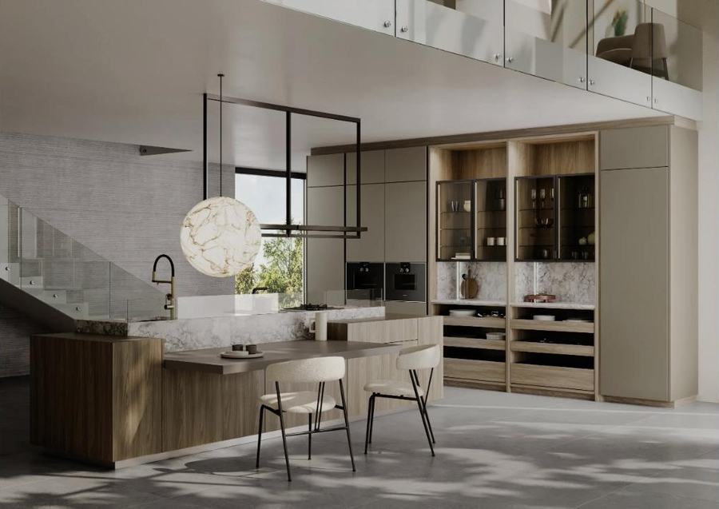
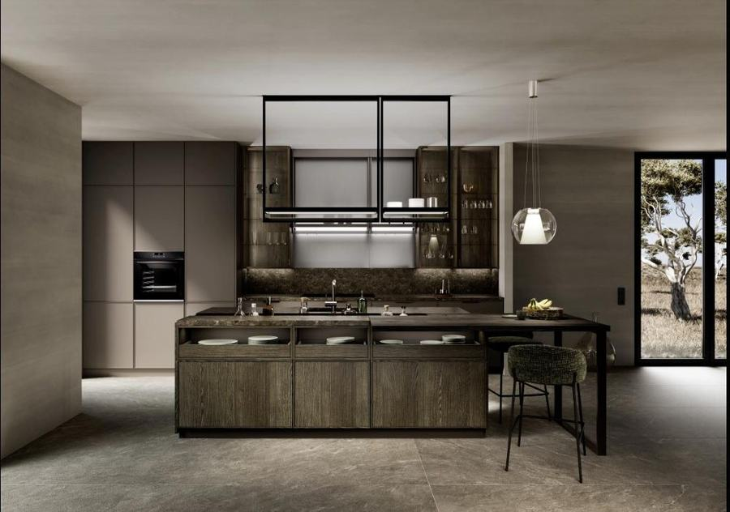
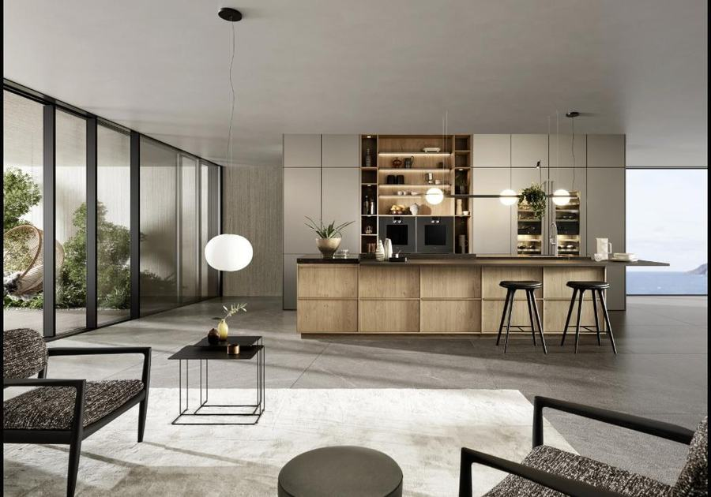
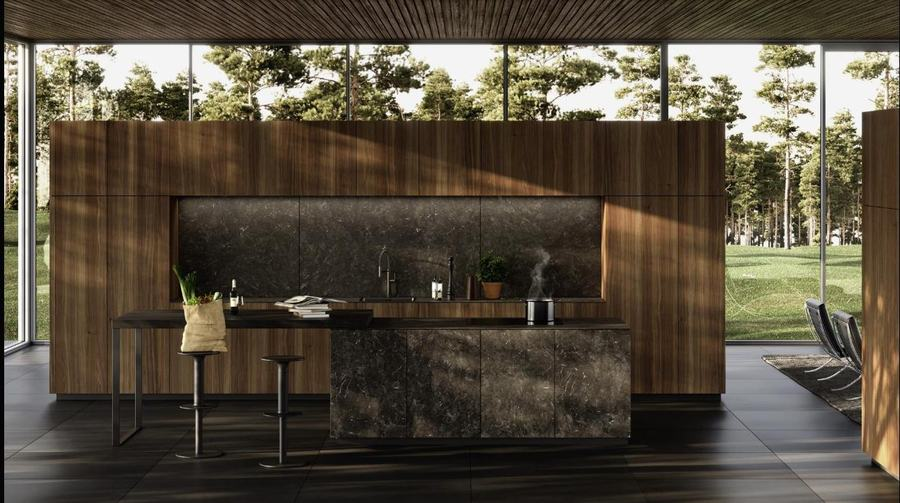
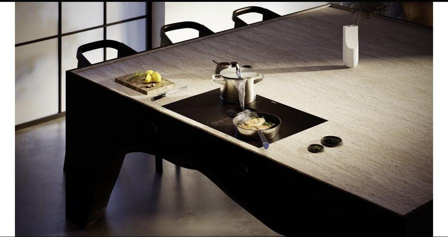
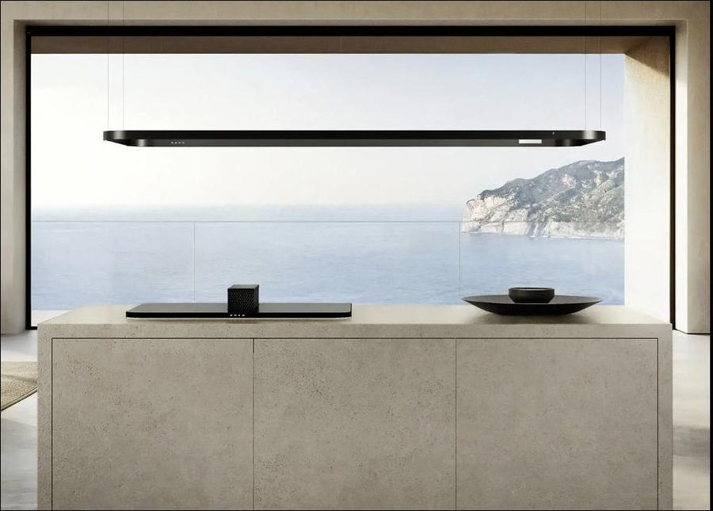

Cocinas
La cocina no es una estancia más: es el gesto que ordena la casa entera. Cada proyecto nace de la arquitectura del espacio, nunca del catálogo.
Saber más →
Especialistas en Filosofía /HOMING\
La cocina no es una estancia más: es el gesto que ordena la casa entera. Cada proyecto nace de la arquitectura del espacio, nunca del catálogo.
Saber más →
El orden como forma de calma. Cada objeto encuentra su lugar, cada superficie responde a una intención precisa.
Saber más →
Del primer trazo a la última pieza instalada, una sola mirada gobierna el tiempo, la materia y la luz.
Saber más →
/HOMING\
Homing no es decorar. Es una manera de habitar: el umbral donde la cocina deja de ser una estancia aparte y se convierte en el centro gravitacional de la casa, en diálogo constante con la luz, la materia y quienes viven ahí. Escuchamos antes de dibujar; entendemos cómo se vive antes de decidir cómo se verá.
El espacio bien equipado no se nota. Se siente.
Conoce nuestra filosofía →Estudio oficial
Somos Leun Estudio: la mirada que diseña, la mano que ejecuta. Estudio oficial de cocinas Saitra —firmantes de la filosofía /HOMING\— y Leicht en Donostia, donde cada proyecto se materializa con la fabricación a medida de ambas firmas.
Kitchen · Bathroom · Living. Cocinas, vestidores, baños y hogar concebidos como un todo coherente.

Cocina, comedor y lectura en continuidad visual. Bancada a medida y librería integrada: la casa que fluye sin costuras.

Líneas precisas y atmósfera serena. Desayunador y lavandería ocultos; el interior se prolonga hacia la cocina de exterior.

Espacios integrados y coherentes. Acabados coordinados que amplían la estancia y refuerzan la continuidad visual.

Roble que devuelve calidez y atemporalidad a la cocina moderna. Veta honesta, presencia serena.

Puerta en madera de eucalipto con el tirador integrado SUA. Diseño, ergonomía y durabilidad en un mismo gesto.

Cocina abierta que integra sala y comedor. Distribución en U que exprime al máximo la luz natural.
← Desliza para explorar los modelos →

Cristal acrílico que devuelve la luz sin envejecer: elegancia en mate o brillo, resistente al tiempo y al uso diario.

Marcos de una finura casi ausente: la ligereza como lenguaje, el color y el material puestos al servicio de una cocina que es solo tuya.

Donde Japón y el norte de Europa comparten silencio: formas claras, materia honesta, la calma como acabado final.

Chapa de roble o nogal que no se detiene en el mueble: envuelve cocina y salón en una misma piel cálida, sin un solo tirador que interrumpa el gesto.
← Desliza para explorar Leicht →
Integramos Bora —el sistema que hace desaparecer la campana extractora— y las colecciones más arquitectónicas de Smeg, lejos de su registro retro.

El fin de la campana tal y como la conocíamos: el vapor desaparece por el borde de la encimera y el techo queda libre para que la cocina se diseñe sin condicionantes.

Presencia arquitectónica en estado puro, firmada por Stefano Boeri Interiors. También en Musa, con BorromeodeSilva Studio — dos maneras de alejarse del retro sin perder el carácter.
Cada proyecto se termina de vestir con firmas del diseño español contemporáneo: Stua, Joquer, Punt Mobles y Expormim.
← Desliza para descubrir las firmas →
Nuestro local de Donostia nace inspirado en las salas Virenis, Eloria y Tessira del showroom de Saitra en Villa Roseta: materia, luz y continuidad llevadas al detalle.
Cuéntanos cómo vives: ahí empieza todo. Cada proyecto nace de una conversación sin compromiso, en nuestro estudio de Donostia · San Sebastián. Apertura octubre 2026.
¿Prefieres hablar directamente? Reserva una primera conversación de 45 minutos →